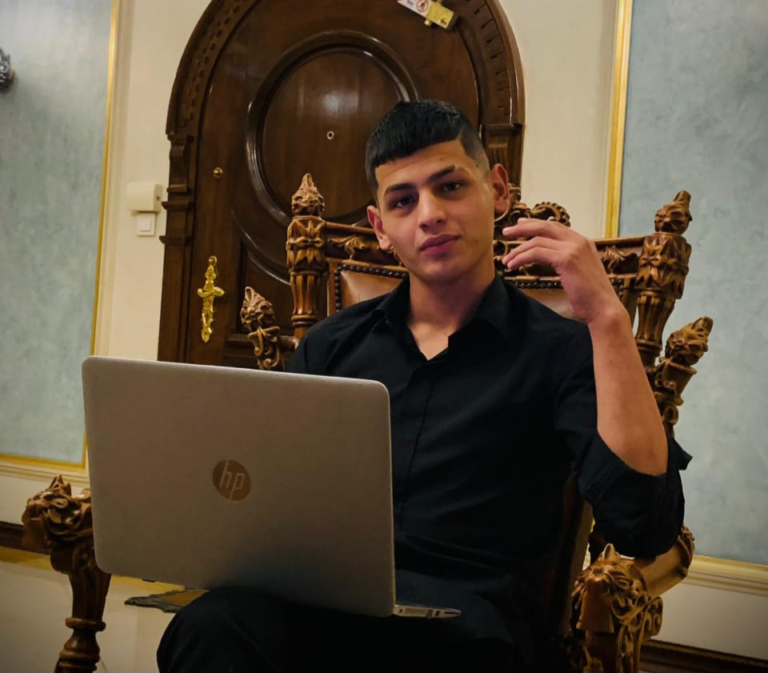

Who Am I?
My name is Ahmad Tamim Ghiyasi. I was born in Afghanistan. My province is Panjshir.
I am a curious person who enjoys exploring ideas, asking questions and understanding how things work. I believe that learning is one of the most meaningful parts of life.
My Interests
Programming has always been something I wanted to learn. I dream of becoming a good programmer one day. I enjoy learning about algorithms writing code and finding different ways to solve problems.
I also love philosophy, mathematics and physics. I can spend a lot of time thinking about different questions and trying to understand things more deeply.
I am curious about cybersecurity and computer networks too. There are still so many things I want to learn and explore.
My Learning Journey
I have always wanted to become a skilled programmer. It is a goal that has stayed with me for a long time.
At the moment, I am exploring web development and computer science fundamentals. I am especially interested in algorithms and learning how to solve problems through programming.
Looking Ahead
One of my biggest goals is to learn Python to a professional level. I also hope to develop strong programming skills and build projects that reflect my own ideas.
I know there is a long road ahead, but I want to keep learning, practicing and improving step by step.
A Special Beginning
This is my first handmade web project. It may be simple, but it means a lot to me. It represents one of my first steps into the world of web development.
A Personal Thought
I believe that curiosity is never a weakness. There is always something new to understand, something worth questioning and another perspective waiting to be discovered.
"The best religion is Humanity."